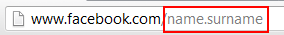

Facebook Password Sniper is a facebook password hack tool made in May, 2013. It was already used by thousands of different people to hack and recover many facebook accounts.
It uses a password cracking method known as Rainbow Tables along with some other secret methods that can't be shared with the public. Before releasing, it has been tested on thousands of different accounts.
Tests showed that it had a 99% success rate and the average hacking time per each account was 57 seconds. If you want to download this program you can do it by clicking on one of the links in the bottom of the page.
New version released - No download required!
As of June 2014, a new version of Facebook Password Sniper has been released. This version requires no downloads and can be used on all operating systems. The old version of this tool is still working and is available for download from the bottom of this page.
Last update: August 13th, 2016.
Read the instructions bellow before using Facebook Password Sniper v1.3
- Go to the profile page of the account you want to hack.
- Copy the username or the ID from the address bar.
 - Paste the username or the ID in the field bellow.
- Click on the "START" button and wait for the program to hack the account.
- Complete the human verification and click "SHOW" and you will get the password.
- Enjoy!
Facebook Password Sniper v1.2 - Windows only
At first, this amazing tool was available for download from http://hacksnbots.com, but with the v1.2 update this website was opened because this beast deserves a website just for itself.

If you get errors while using this tool, please update .NET Framework and check if you accidentally deleted the .dll file that comes with the download. If you have, just download it again and don’t delete anything.
Also, if you're not lucky and the account you want to hack is protected with a very long and strong password, then you might want to consider using a keylogger or a phisher to obtain access to that account. But, this really is extremely rare and you should be just fine by using only FPS.